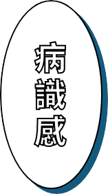

在這個資訊爆炸的時代，網路對我們來說可以說是生活必需品，特別是千禧世代的人們，我們可以無時無刻在網路上接收到新資訊，雖然方便，但也容易引來過多資訊所帶來的焦慮或成癮。
看到這裡，是否有些共鳴了呢？這些症狀我們稱之為科技文明病。雖然看似小病小痛，不會對人體產生致命的危害，但卻也容易一點一點的深入我們的生活，進而影響到我們的時間管理，甚至是情緒等等。
例如有些人會一直拿起手機看有沒有新訊息，或是離開電子設備不久就會感到不自在，重新接觸後像是戒斷症一樣，感到更加歡愉，有些人會在網路上建立自己的另一個人格尋求認同感等等。
我們認為病識感是很重要的，當你發現自己可能生病了，才會想辦法去治療自己。我們希望透過手搖飲料這樣的載體，與千禧時代的人們做連結，讓大家可以在購買屬於自己的飲料的同時，進而去了解可能也發生在自己身上的科技文明病。

同時我們也希望讓大家知道「有病」並不是什麼丟臉的事，當你去了解它之後，會發現或許身邊很多人也有一樣的症狀，大家說不定可以互相了解，一起找出改善的方法。